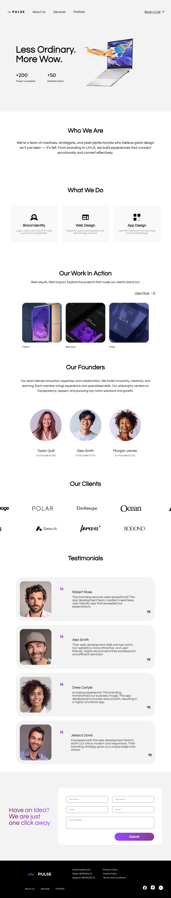

Designed a modern agency website focused on building trust, communicating value clearly, and converting visitors into inquiries.

Pulse — full page layout
This project was aimed at designing a clean, high-conversion website for a creative agency. The goal was to balance visual appeal with clarity — ensuring users quickly understand what the agency does and feel confident reaching out.